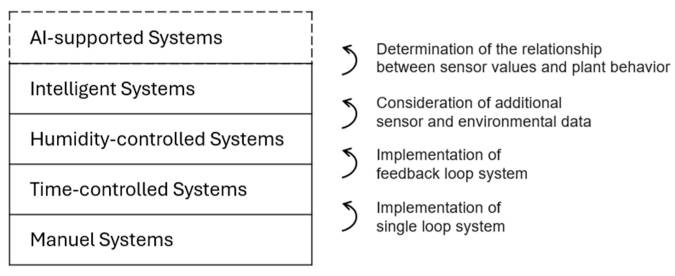
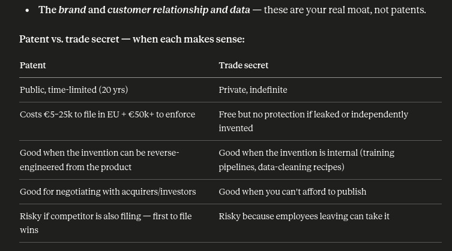

The three nested questions — sensor density per hectare, installed-cost per hectare, and the share of farms LeafShift would have to equip versus integrate with versus build greenfield — have very different levels of public-data support. Sensor density is well anchored in extension-service guidance and manufacturer literature. Per-hectare capex is a cost-engineering exercise on top of published list prices. The "usable fraction" question is the softest of the three: there is no clean, segment-level statistic anywhere in the public domain for "% of German potato farms running quantitative volumetric-water-content (VWC) telemetry." For that question the numbers below are reasoned estimates triangulated from GTAI/BMLEH 2024–25 adoption surveys, Thünen sensor-irrigation field reports, Mordor/IMARC GCC market reports, and a 2024 Saudi farmer survey published in Frontiers in Agronomy. Ranges, not point estimates, are the honest output, and we flag where the uncertainty is large enough to materially change the financial model.
Key strategic takeaway for the financial plan: in every segment except UAE high-tech CEA, the dominant deployment mode for LeafShift will be greenfield hardware-plus-software for the first 24 months. Hardware revenue (sensors, LoRaWAN nodes, install) will dominate ARR until the installed base is large enough for the SaaS/decision-layer revenue to become material. Pure "decision-layer-on-top-of-existing-sensors" deals will be a small minority (< 10–15 %) in Germany and even smaller in Saudi open-field, but a meaningful 25–35 % in UAE high-tech greenhouses where Priva/Ridder/Argus climate computers and substrate sensors already exist.

| Segment | Sensor stations/ha (min viable → optimal) | Sensors/ha (multi-depth, total) | Installed capex/ha (min → optimal, EUR) | % already AI-compatible | % retrofit/integrate | % greenfield |
|---|---|---|---|---|---|---|
| Open-field potatoes (Niedersachsen) | 0.1 → 0.5 stations/ha (1 station per 2–10 ha) | 0.3 → 2 sensors/ha (2 depths/station) | €80 → €450/ha | 3–7 % | 10–15 % | 78–87 % |
| Open-field vegetables / horticulture | 0.2 → 1.0 stations/ha | 0.5 → 4 sensors/ha (2 depths) | €150 → €900/ha | 5–10 % | 10–15 % | 75–85 % |
| Protected horticulture / greenhouses | 1 station per zone, ≈ 5–15 stations/ha | 5–30 substrate sensors/ha | €2,500 → €8,000/ha | 25–35 % (substrate moisture, often proprietary) | 25–35 % | 35–45 % |
| Vineyards / wine (Mosel, Rheingau, Pfalz, Baden, Württemberg) | 0.5 → 2 stations/ha (multi-depth) | 1.5 → 8 sensors/ha (3–4 depths) | €400 → €1,800/ha | 3–8 % | 5–10 % | 85–92 % |
All EUR figures are installed capex assuming LeafShift bundles sensor + LoRaWAN telemetry + labor + first calibration. Service/replacement is treated separately below.
| Segment | Sensor stations/ha (min viable → optimal) | Sensors/ha total | Installed capex/ha (min → optimal, EUR) | % already AI-compatible | % retrofit | % greenfield |
|---|---|---|---|---|---|---|
| Greenhouse / protected (UAE-led, also KSA) | 1 station per zone; 8–20 stations/ha for soil/substrate beds | 8–40 sensors/ha | €3,000 → €10,000/ha | 25–40 % (large CEA), <10 % (low-tech net houses) | 25–35 % | 30–45 % |
| Open-field high-value crops, KSA (Al-Jouf, Tabuk, Hail, center-pivot, ~50 ha circles) | 0.04 → 0.15 stations/ha (1 per 7–25 ha) | 0.15 → 0.6 sensors/ha (2–3 depths) | €40 → €250/ha | 8–15 % (large agribusiness probes) | 10–15 % | 70–82 % |
| Date palms (KSA + UAE, drip/bubbler, 100 palms/ha at 10×10 m) | 0.2 → 1.0 stations/ha | 0.6 → 4 sensors/ha (deep root profile, 3–4 depths) | €200 → €1,200/ha | 2–6 % | 4–8 % | 86–94 % |
The published literature converges on a clear hierarchy. Agronomic guidance from Sentek, METER, Sensoterra, Soil Scout, MSU Extension, UMN Extension, and Clemson Extension all agree on two principles: (a) sensor stations should be placed in representative management zones (defined by soil texture, topography, water-distribution uniformity, and yield maps), and (b) at each station, multiple depths are required — typically at one-third, two-thirds, and the full depth of the crop's root zone. The number of stations per hectare is driven by management-zone density; the number of sensors per station is driven by root-zone biology.
Industry practice on commodity row-crops is one probe per 40–80 acres (16–32 ha) — this is what most North American corn growers and potato growers actually do, per the Quora practitioner consensus and consistent with Spud Smart's Alberta extension reporting. That gives a minimum viable density of roughly 0.03–0.06 stations/ha for very large pivots. For an AI/ML decision layer that needs to learn spatial heterogeneity (and in heterogeneous Lower Saxony sandy soils, where Thünen Working Paper 179 / Schröder et al. flagged that 3–5 different soil zones can co-exist within a single irrigation circle), you should plan 2 stations per typical 40–60 ha pivot at minimum, and 3–5 stations for the optimal AI-training case, i.e. 0.05–0.15 stations/ha. Each station carries 2 depths for shallow-rooted potatoes (e.g. 20 cm and 40 cm) — the Thünen sensor-irrigation potato project worked at this resolution. So 0.1–0.6 sensors/ha is the realistic working range; 2 sensors/ha is already research-grade.
For German open-field vegetables (carrots, onions, leafy greens, asparagus) the field economics are different: fields are smaller (often 1–10 ha rather than 30–60 ha pivots), the crops are higher-margin per hectare, and shallower-rooted leafy crops require denser horizontal coverage. A reasonable working range is 0.2–1.0 stations/ha at 2 depths, giving 0.5–4 sensors/ha. ASABE and Sensoterra both recommend at least one sensor per irrigation zone, and German vegetable irrigation zones are typically 0.5–2 ha.
For Saudi open-field high-value crops on the giant Tabuk/Al-Jouf/Hail pivots (50-ha circles are typical, with companies like Tabuk Agricultural Development running 200 pivots and Al-Jouf running 60,000 ha), one Sentek/METER profile probe per pivot is the de facto industry standard when probes are used at all. That equals ~0.02 stations/ha. For an AI system, 2 stations per pivot (one inner span, one outer span) is the realistic optimum — 0.04 stations/ha, 0.12–0.20 sensors/ha if you stack three depths on a Sentek 60–90 cm Drill & Drop.
Vineyard practice (WSU Pacific NW, UC ANR Vineyard Team, and Sensoterra) is to deploy fewer stations but at more depths. Mature grapevines extract from > 1.5 m, so 4 depths per station (e.g. 30, 60, 90, 120 cm) is the norm, and stations are placed within 30–60 cm of the trunk to capture root-zone water status. German Mosel/Rheingau/Pfalz blocks are typically 0.5–2 ha. Expect 0.5–2 stations/ha × 3–4 depths = 1.5–8 sensors/ha. For premium RDI work (which is exactly LeafShift's positioning) the deeper end of the range is justified.
For date palms (10 m × 10 m spacing = 100 palms/ha, per Al-Omran et al. and the Al-Hassa lysimeter studies), the relevant analogy is orchard practice. Probes go in the irrigated zone of representative trees: a defensible plan is 1 station per 1–5 ha at 3–4 depths down to 1.2 m to capture the deep root zone of mature palms, i.e. 0.6–4 sensors/ha. For very large date estates (Al-Hassa, Al-Ahsa, Al Ula) the per-hectare density drops toward the 1-station-per-5-ha end.
Greenhouse practice is fundamentally different because the unit of management is the irrigation zone or the substrate bag/slab, not the hectare. Climate Control Systems' Fertigation Manager — a typical Dutch-style greenhouse architecture — supports "up to 20 moisture sensors per system, averaging readings between 3 sensors per irrigation zone" with up to 48 valves. North American floriculture extension (Greenhouse Grower / METER ECH₂O guidance) recommends 3 sensors per zone. A 1-ha tomato/cucumber greenhouse typically has 4–8 irrigation zones, so 12–24 substrate sensors per ha is the realistic optimum, with a minimum-viable of ~5 sensors/ha (one per zone). For UAE and Saudi commercial greenhouses (e.g. ADQ's 10-ha AgTech Park facility, NEOM Topian's 4-ha greenhouse) the same logic applies. Caveat: most modern UAE greenhouses are hydroponic/substrate (rockwool, coco coir) — the relevant sensor is a substrate-water-content sensor (TEROS 12 is the de-facto standard), not a soil-moisture sensor. LeafShift's value proposition there is more "decision layer / model" than "sensor supply."
| Sensor class | Representative SKU | List price (Europe, single unit) | Bulk pricing (1k+ units, indicative) |
|---|---|---|---|
| Cheap capacitive | DFRobot SEN0193 | €2–14 | €1.50–8 |
| Mid-tier capacitive/FDR | Truebner SMT50 | €60–90 | €45–60 |
| Research-grade single-point | METER TEROS 10 | €140–180 | €100–130 |
| Research-grade with EC | METER TEROS 12 | €350–450 (METER) — €695–745 via Eijkelkamp/specialist resellers | €230–300 |
| Multi-depth FDR profile probe | Sentek Drill & Drop 60 cm (6 sensors) | €600–900 | €450–650 |
| Multi-depth FDR profile probe | Sentek Drill & Drop 90 cm (9 sensors) | €800–1,200 | €600–850 |
| Multi-depth FDR profile probe | Sentek Drill & Drop 120 cm (12 sensors) | €1,000–1,400 | €750–1,000 |
| Acclima TDR-315H (gold-standard) | TDR profile | €300–600 single-point; €1,000–1,500 multi-point | €700–1,100 |
| Tensiometer (Watermark / Truebner T-block) | matric potential only | €40–200 | €30–120 |
The Eijkelkamp €695–745 figure for TEROS 12 appears to include reseller margin / EU calibration service; METER's direct EUR pricing through evvos.com and specialist distributors places the bare sensor closer to €350–450 — that is the right number for LeafShift's bill of materials at low to medium volume. Sources: METER Group (metergroup.com), iot-shop.de, evvos.com, Vienna Scientific (Sentek EU distributor), Davis Instruments US listings (cross-checked for Sentek Drill & Drop pricing structure), and the Truebner manufacturer catalog.
A self-built ESP32 + RFM95 LoRa + IP67 enclosure + Li-SOCl₂ battery + small solar panel BOM lands at €40–80 in 1k volume, €25–45 in 10k volume. Off-the-shelf agricultural nodes (Sensoterra single-probe, Pessl METOS-LoRa, Davis EnviroMonitor) sit at €150–350. A multi-sensor SDI-12 node (one LoRaWAN gateway can read 2–4 SDI-12 probes at a station) is the cost-efficient architecture. Public LoRaWAN gateway coverage in Germany is partial — Lower Saxony in particular has gaps requiring private gateways at €200–600 per gateway, covering 2–10 km depending on terrain.
| Segment | Recipe (mid-case) | Total mid-case €/ha |
|---|---|---|
| DE potatoes Lower Saxony | 0.2 station/ha × (€600 Drill&Drop 60cm + €70 LoRa node + €120 install + €40 calibration share) ≈ €165/ha | €80–450 |
| DE open-field vegetables | 0.5 station/ha × similar BOM | €150–900 |
| DE greenhouses (1-ha) | 8 zones × 3 substrate sensors × €350 TEROS-12 + €500 controller integration + €1,500 install ≈ €10k for a 1-ha tomato house, or €4–6k if mixed with cheaper sensors | €2,500–8,000 |
| DE vineyards | 1 station/ha × €900 D&D 90 cm + €70 node + €150 install ≈ €1,100 | €400–1,800 |
| GCC greenhouses | similar to DE but with extra cooling-zone monitoring + dust enclosure premium | €3,000–10,000 |
| KSA open-field pivots | 0.04 station/ha × €1,000 D&D 120cm + €100 node + €150 install ≈ €50/ha | €40–250 |
| GCC date palms | 0.4 station/ha × €1,000 D&D 120cm (deep) + €150 node + €150 install ≈ €520/ha | €200–1,200 |
Bulk dynamics LeafShift should plan for in the financial model: at 100 units / segment → near list price; at 1,000 units → 25–35 % discount on hardware; at 10,000 units → 40–55 % discount on hardware but only if LeafShift commits to OEM/private-label volumes with METER, Sentek, or builds its own SMT50-class product. Telemetry-node BOM scales much harder — going from artisanal €70 to ~€30 at 10k volume. Realistic blended hardware-margin assumption for a startup: 35–50 % gross on bundled sensor+node hardware in years 1–2, expanding to 50–60 % by year 3.
The most important methodological caveat: "smart irrigation adoption" headlines in market reports systematically overstate the share of farms with AI-compatible quantitative VWC telemetry. GTAI's headline that "85.5 % of German farms use digital technologies" (BMLEH 2024/25 study) covers FMIS software, GPS guidance, parallel steering, yield mapping, herd-management, and farm-accounting tools — most of which have nothing to do with soil moisture. Mordor/Ken Research/IMARC's "Saudi smart irrigation market USD 270 M" likewise lumps drip irrigation hardware (43.7 % share, 2024), basic timer-based controllers, and IoT sensors together. A KSA farmer survey (Mir et al., arXiv 2407.04273) found 60 % of (a small N=10) respondents claiming to use "advanced technologies such as sensors and automatic irrigation" — which is unrepresentative and almost certainly lumps drip+timers with genuine sensor-driven control.
The right denominator for LeafShift is: of farms in segment X, what fraction has (1) a soil/substrate moisture sensor in the ground, (2) outputting quantitative VWC continuously, (3) accessible via API/MQTT/LoRaWAN/SDI-12 logger that LeafShift can pull from? That number is materially smaller than "smart agriculture penetration."
Open-field potatoes (Niedersachsen). The Thünen Institute's sensor-based potato irrigation work (Working Paper 179, Schröder et al., 2021) documented that on-station experimental fields use weekly soil sampling and gravimetric moisture, while the cooperating farmer "managed irrigation by visual monitoring of the potato leaves" — a candid statement that even in the most irrigation-intensive German region, sensor-driven management is still rare on commercial farms. Beregnungsverbände (irrigation cooperatives in Uelzen, Lüneburg, Gifhorn) are early adopters of weather-station-based ET scheduling and Geosense/CropX/AgriCircle pilots, but these are typically <10 % of irrigated potato area in 2024–25. Estimate: 3–7 % of irrigated potato hectares have AI-compatible sensors today (Sentek probes deployed by larger growers and contractors via FarmFacts/Geo-Sense/Pessl METOS); 10–15 % have legacy sensors (Watermark tensiometers, simple dataloggers, irrigation cooperative weather-station-only schedulers) that LeafShift could integrate with for ET data but that do not provide quantitative VWC; 78–87 % are greenfield, irrigating by visual cues, calendar, or simple ET sheets from the LWK Niedersachsen Boniturservice. Implication: in the DE potato segment, expect ~80 % greenfield → hardware revenue dominates ARR for the first 24 months.
Open-field vegetables / horticulture. Slightly higher tech intensity than potatoes because of the higher per-hectare margins, but the Tandfonline 2024 review of 200 digital tools for German fruit cultivation found that adoption of in-field sensor tools is the lowest-adoption category (mapping and GPS guidance lead). Asparagus and carrot growers in Brandenburg and Niedersachsen run Pessl METOS weather stations widely (probably 25–40 %) but soil-moisture sensors specifically are still <10–15 %. Estimate: 5–10 % AI-compatible, 10–15 % retrofit-able (METOS/weather-station-only), 75–85 % greenfield.
Protected horticulture / greenhouses. Destatis 2026 records 1,508 holdings on 1,250 ha. German tomato/cucumber greenhouses (Reichenau, Dutch-style operations in Westfalen/Nordrhein) are 70–80 % run on Priva, Hortimax, or Ridder climate computers, and a meaningful share of those (estimated 30–50 %) have substrate moisture/EC sensors integrated in the climate computer. The catch is that those climate computers are largely closed proprietary ecosystems — getting time-series VWC data out requires either an OEM API agreement (Priva does have a Connext API; Ridder has HortOS partnerships) or a hardware retrofit. Estimate: 25–35 % already have substrate moisture sensors that could be made AI-compatible via integration deals; 25–35 % retrofit candidates with climate computers but no moisture sensing; 35–45 % greenfield (smaller, lower-tech German greenhouses, especially in the strawberry/herbs niches the Thünen reports cover).
Vineyards / wine. Adoption of sensor-based irrigation in German wine regions is structurally low because most German wine production is rainfed or only emergency-irrigated — Mosel and Rheingau receive 600–800 mm/year. Climate change is shifting this; the Pfalz and Baden are starting to deploy drip + sensors on premium estates. Realistic adoption: 3–8 % AI-compatible (a few VDP estates with Sentek/METER probes), 5–10 % retrofit candidates with weather stations, 85–92 % greenfield. This is the highest greenfield segment in DE — and it's also the one where regulated-deficit-irrigation (LeafShift's plant-stress-trajectory feature) has the highest willingness-to-pay because the value of grape quality differentiation is enormous.
UAE/KSA greenhouses. This is by far LeafShift's most retrofit-friendly segment in either market. The MEA commercial greenhouse market reports (Market Data Forecast 2024, Precedence Research 2024) document that UAE-led high-tech CEA — ADQ AgTech Park, Madar Farms, Pure Harvest, NEOM Topian — overwhelmingly already has IoT-integrated climate control. ADFCA 2014 data showed 10,003 greenhouses in Abu Dhabi alone (44 % non-active by then), most of them low-tech net houses without sensors. So the segment splits sharply: the 50–100 large modern facilities (the "high-tech" tail) are 50–70 % already running substrate sensors via Priva/Argus/Ridder/Hortimax (25–40 % of segment hectares) and another 25–35 % are retrofit candidates with climate computers but no moisture sensing. The much larger long tail of low-tech net-house greenhouses (Ras al-Khaimah, Saudi family farms) is 30–45 % greenfield. Caveat: most of the high-tech modern facilities are hydroponic, which the user excluded — for those, the soil moisture sensor question is moot and LeafShift's relevant product is the AI/ML decision layer over substrate VWC, not a soil-moisture sensor sale. The numbers above are weighted toward the soil-grown/coir-grown subset.
Open-field high-value crops in Saudi Arabia (Al-Jouf, Tabuk, Hail). These regions produce ~65 % of national output (Mordor Intelligence) on large mechanized pivots run by Tabuk Agricultural (200 pivots), Al-Jouf Agricultural Development, NADEC, HADCO, and similar agribusinesses. The Frontiers in Agronomy 2024 paper by Ahmad et al. ("Prioritizing factors for the adoption of IoT-based smart irrigation in Saudi Arabia") explicitly identifies that IoT smart-irrigation adoption is still nascent in KSA despite Vision 2030 incentives. The Saudi Irrigation Organization + FAO have established 21 demonstration farms by June 2024 — a tiny installed base. Large agribusinesses (top 10–20 companies) likely have Sentek/AquaSpy/CropX probes on a fraction of their pivots (often 1–2 reference probes per farm, not per pivot). Estimate: 8–15 % AI-compatible (concentrated in the top corporate farms), 10–15 % retrofit-able (have flow meters and climate-computer pivot panels but no soil sensors), 70–82 % greenfield, with most smallholders fully manual. The upside: when LeafShift wins one of the top-20 corporate farms, the deal size is enormous (200+ pivots).
Date palms (KSA + UAE). The Al-Omran et al. work and the IoT-Based Subsurface Irrigation studies (Al-Ghobari et al., Sensors 2021) establish that most Saudi date palm orchards are still on basin-flood or basic bubbler/drip with little to no soil moisture instrumentation. The Al-Hassa, Al-Qassim, and Al-Madinah oases are particularly traditional. UAE date palm operations are slightly more mechanized but still dominated by simple drip + timers. Sensor adoption is well below open-field. Estimate: 2–6 % AI-compatible, 4–8 % retrofit-able (typically only weather-station + flow-meter), 86–94 % greenfield. The financial significance of this segment is the very large hectarage — Saudi Arabia has ~160,000 ha of date palms with 28 M trees — so even penetrating 1–2 % is a major TAM, and the willingness-to-pay arises because date palms are a strategic/cultural crop the Saudi government heavily subsidizes.
Sources flagged as lower confidence: the "60 % of Saudi farmers use advanced tech" figure has N=10 and is not representative; the Vocal Media / Futurism piece is a market-narrative aggregator with no primary survey; the Farmonaut "60 % of German farms expected to adopt precision farming by 2025" is a vendor-blog projection. Numbers in this memo deliberately do not lean on these.
Based on questions my buddy Gijs asked:
[06:36, 4/30/2026] Gijs (mens): dus geen gpu kosten rekenen?
[07:07, 4/30/2026] Gijs (mens): ook niet als we gaan scalen
My ans: Ja en nee. Ik train 'een basis model' thuis, dit is gratis. En dan voor elke farm fine-tunen we op basis van hun data, het is het meest scalable als we dat ik gehuurde GPU's doen.
Het trainen gaat voor nu prima op mijn gpu.
Foundation model + per-farm fine-tuning: Train one large base model on aggregated data across all customers, capturing universal soil/crop physics. Then per farm you only fine-tune the last few layers, or fit a thin "adapter" — a small per-farm polynomial correction or LoRA-style low-rank update — that captures the soil-specific bias. This is much cheaper per farm at scale because the expensive part (the base model) is trained once. Base model retrain = a few hundred GPU-hours twice a year. Per-farm adapter = 1–5 minutes on CPU. At 10,000 farms this is still under €1k/month total.
Dat is trainen van de AI, het dure gedeelte.
dat is eenmalig. De AI zelf runt gewoon op een aardappel dan. Dat kan op de edge computer van de farm, of we kunnen een LeafShift server maken. Ik stel beide voor als een optie.
Hier de kosten per klant, per 1000 klanten + ik hou rekening met data protection laws van EU volledig hier. Ik ga hier uit van dat niemand een eigen edge computer, en alle Inference compute (CPU cloud) op onze kosten moeten zijn, maar die kosten zijn werkelijk niks dus mnu.
What to actually budget in the financial plan. Three line items:
Total ML/cloud opex at 1,000 customers: ~€1,000–3,000/month, or ~€1–3 per customer per month. That's a rounding error against per-customer ARR which will be in the hundreds to thousands of euros. So Gijs's intuition that this might be a big cost is understandable from the LLM headlines, but for tabular/time-series ML it really is negligible.
On data protection: you're right that this matters but it's not really a GPU question. EU Data Act + GDPR + AI Act + the German farmer-data sovereignty expectations from the GTAI fact sheet mean you should host on EU infrastructure (AWS Frankfurt, Hetzner, OVH, Scaleway, or a German provider). That adds ~10–20 % to compute cost vs. the cheapest US options but is non-negotiable for the German market. Build it in from day one.
[10:35, 4/30/2026] Gijs (mens): wat bedoel je met retrofit en greenfield?
my ans: Quick definitions:
Greenfield = the farm has no existing sensor or automation infrastructure relevant to LeafShift. You arrive with empty soil, install LeafShift sensors, LeafShift gateway, LeafShift dashboard. You sell hardware + software + install. Highest deal value, highest install cost, slowest to deploy.
Retrofit / integrate = the farm already has sensors or a climate computer or a weather station from someone else (Priva, Sentek, Pessl METOS, CropX, etc.), but those sensors aren't doing intelligent decision-making. LeafShift plugs in via API, ingests the existing data, and adds the AI/decision layer on top. You sell mostly software + integration work, sometimes a few extra sensors to fill gaps. Lower deal value, much higher gross margin (it's mostly SaaS), faster sales cycle.
AI-compatible already = a sub-case of retrofit where the existing sensors are already research-grade and properly outputting quantitative VWC data via an open API. Almost pure SaaS deal, very few of these in either market.
The strategic point: greenfield deals are bigger but heavier; retrofit deals are smaller but more profitable per euro of effort. Your segment mix in years 1–2 will be ~80 % greenfield (so hardware revenue dominates), and as you mature into UAE high-tech greenhouses and German horticulture the retrofit share grows (so SaaS margin improves).
[10:37, 4/30/2026] Gijs (mens): en wil je installation outsourcen?
[10:37, 4/30/2026] Gijs (mens): Install labor: 1–2 hours per station (auger borehole + sensor placement + node mounting + commissioning) at €50–100/hr fully loaded → €60–200 per station. Sentek Drill & Drop is faster (slot-and-drop, no slurry) than horizontal-trench installs.
my ans: Ik zou zeggen voor de eerste 10 klanten doen we het zelf (PHASE 1), want we moeten zelf iets van training opzetten en instructies voor installatie dus we moeten het zelf hebben gedaan om het goed te begrijpen. Ook door dit:
You cannot debug an AI system that takes data from sensors you've never personally placed in the ground. You will learn calibration, soil contact, cable routing, gateway placement, and what breaks. This is irreplaceable founder knowledge.
The unit economics don't matter yet — the goal is reference customers, not gross margin.
You are studying data science full-time. You can afford the time on weekends and during fieldwork sprints; you cannot afford a €5k installer bill on a €15k pilot deal.
Dan als dat goed gaat: PHASE 2: Hire one or two field technicians, or use freelancers per region. Don't outsource yet to a third-party installer company because they'll do it badly and your customers will blame LeafShift. Dus het is de extra kost waar, als het krap is met kosten: student freelancers! wij kennen genoeg,.
Dan als dat lekker loopt en we hebben goede instructies en alles en +75 klanten: PHASE 3: Now outsource selectively. Partner with irrigation installers (Beregnungsverbände, drip-irrigation contractors, Netafim/Lindsay dealers) and certify them on LeafShift install procedure. They already visit the farms, they already have the auger and the trucks. You pay them €100–250 per station as a per-job fee. This is when the €50–100/hr "fully loaded" number from the memo becomes real — that's the cost of an external technician with truck, tools, insurance, and overhead, not your own time.
What Gijs should put in the model: in PHASE 1–2, install cost is founder/employee labor, capitalized into customer acquisition cost, ~€80–150 per station. In PHASE 3+, install cost is outsourced at €150–250 per station, but at higher volume and so total install cost per hectare per customer drops because you've also moved to faster install methods (Sentek Drill & Drop slot-and-drop, pre-built telemetry boxes).
Important nuance: the install economics are dramatically better with Sentek Drill & Drop than with horizontal-trench installs (where you dig a trench, lay sensors at multiple depths, backfill with native soil slurry, and wait a week for the soil to re-settle). Drill & Drop = drill one vertical hole, push the probe in, done in 30 minutes. Horizontal trench = 2–4 hours per station. This is a real lever — the choice of probe affects your installation cost structure as much as the sensor accuracy does.
[10:42, 4/30/2026] Gijs (mens): bestaat de sensor samenstelling die we bouwen al? zo nee evt patent?
[10:44, 4/30/2026] Gijs (mens): of trade secret houden zodat ze niet kunnen imiteren
my answer: Ik heb hier research over gedaan en samenvatting gemaakt met ai:
The question is essentially: Does the combination of sensor + LoRaWAN node + AI architecture + calibration method that LeafShift is selling already exist as a commercial product? If not, can it be patented? If not patentable, should it be a trade secret?
The honest IP landscape:
A specific algorithm that auto-calibrates sensors using post-hoc Bayesian drift detection from yield/weather data — if this is novel and non-obvious, it's patentable. Probably worth filing if you can write it up.
A foundation model + per-farm adapter architecture for irrigation that handles cross-soil generalization (the "base model + polynomial fit" idea). If implemented in a specific novel way, this could be patentable.
A specific multi-sensor-fusion method for detecting compromised/drifted sensors and weighting them — useful and likely novel for this domain.
Plant-stress trajectory tracking with a specific RDI control law for vineyards/dates — if your method is genuinely different from Stojanova/Allen/etc., maybe patentable.
The brand and customer relationship and data — these are your real moat, not patents.
!! Kijk naar de tabel in de foto !!

My honest recommendation for LeafShift at the stage:
Don't file patents now. A pre-revenue startup spending €15–30k on EU patent filings is misallocating capital. Patents only matter when (a) you have something genuinely novel to defend, and (b) you have the legal budget to enforce them. You are not there yet.
Treat the AI architecture, training pipeline, calibration method, and customer data as trade secrets. Make sure all team members and contractors sign NDAs and IP-assignment agreements. Don't publish your training code on a public GitHub. Keep architectural details out of marketing materials.
File a provisional patent if and when you discover a genuinely novel algorithm. This costs €1–3k and gives you 12 months of priority before deciding to convert it into a full patent. Smart hedge.
Your real defensibility is data + customer relationships + the speed of your iteration. Every customer that runs LeafShift for a year produces calibrated training data that no competitor has. That data is your moat. Make sure the customer contracts give LeafShift the right to train on aggregated/anonymized data — this is a clause in your sales contract, not a patent.
[10:56, 4/30/2026] Gijs (mens): en je bent usa vergeten
[13:15, 4/30/2026] Gijs (mens): Organization & operating cadence (how you run the company)
From day 1 you operate like a real company, even with 2 founders:
Weekly: Founder sync (priorities, blockers), engineering review, risk review
Monthly: Product review + pilot/deployment review + investor update draft
Quarterly: OKRs + roadmap reset + hiring gate + security review
Always: “No quality debt that threatens autonomy and safety”
[13:16, 4/30/2026] Gijs (mens): we moeten echt weer wekelijkse calls/voicememo's gaan doen met updates
A condensed breakdown of our hardware strategy, revenue timeline, and exact sensor needs by farm type.
To build our financial model, we divided our potential customers into "segments" based on their country and what they grow (e.g., German potato fields vs. Saudi date palm orchards) because different crops have vastly different technical needs. For our first two years, in almost every customer segment, we will be dealing with a "greenfield" scenario. "Greenfield" simply means the farm is starting from scratch; they currently have zero smart technology installed. Because they have nothing, our primary way of doing business (our "deployment mode") requires us to sell them the complete physical package: the hardware (the actual moisture sensors and wireless internet transmitters we physically stick into their dirt) plus the software (the app on their phone/computer that reads the data).
Financially, this means our upfront hardware sales and installation fees will drive almost all of our revenue in the early days. Ultimately, our goal is to transition into a highly profitable SaaS (Software as a Service) business. We want farmers paying a predictable, yearly subscription fee for our "decision layer"—the smart AI brain that reads the dirt and tells them exactly when and how much to water. This predictable yearly money is called ARR (Annual Recurring Revenue). However, this software subscription revenue won't "become material" (meaning, it won't become a massive, highly profitable chunk of our total income) until our "installed base is large enough". In plain English: we have to physically get thousands of our sensors into the ground across hundreds of farms before those small, recurring software fees compound into serious money.
There is one major exception where we don't have to sell hardware first: high-tech greenhouses in the United Arab Emirates (referred to as CEA, or Controlled Environment Agriculture). In these highly advanced indoor UAE facilities, 25% to 35% of operations already own the expensive physical sensors and climate computers. In these specific cases, we can sell them just our "decision layer"—our smart AI software that plugs right into their existing equipment to make better watering choices. While these pure software deals will be very rare in Germany (less than 15%) and even rarer in Saudi open-fields, the UAE greenhouse market gives us a great opportunity to sell highly profitable software from day one without having to manufacture or install physical hardware. Note: If we find a client who already has compatible soil moisture sensors, that's good. But we will not assume that that's the case. It might be, but there's no data to guarantee this.
To give our algorithm the best data, industry experts recommend moving away from a strict geometric grid and toward a functional placement strategy. Instead of spacing sensors by distance, we must space them by water demand (grouping by "Hydrozones"). Different types of farms have completely different requirements for soil moisture sensing per hectare. Here is the breakdown:
The following sources were accessed and synthesized to construct the hardware density models, pricing estimates, and regional adoption fractions detailed in this memo.